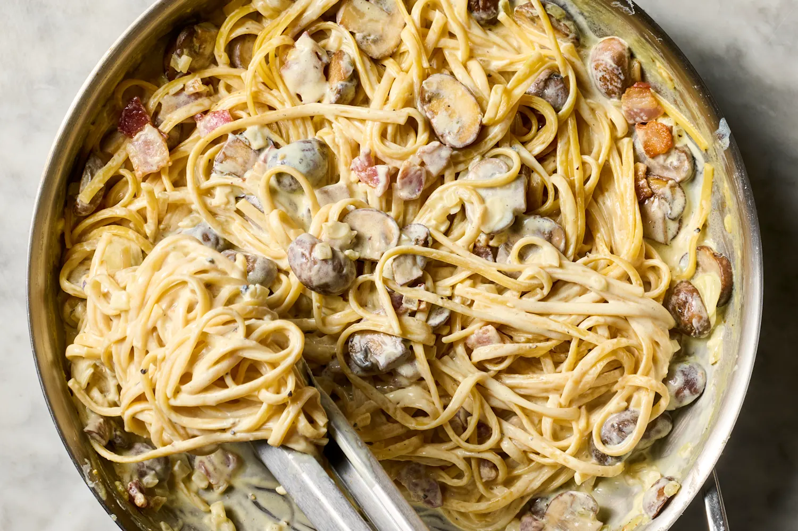

Carbonara

Description
Filipino Carbonara is a rich, ultra-creamy variation of the classic Italian pasta. While traditional Italian carbonara relies strictly on raw eggs and hard cheeses to make its sauce, the beloved Pinoy version swaps eggs for all-purpose cream and evaporated milk, creating a thick, velvety white sauce that satisfies the local love for indulgent comfort foods. It is widely served as a merienda (afternoon snack) or as a celebratory dish during birthdays, holidays, and family gatherings.
Ingredients
Pasta: 500g spaghetti, fettuccine, or linguine
Meat: 150g bacon (chopped) and 150g sweet ham (sliced)
Aromatics: 1 medium onion (minced) and 4–5 cloves garlic (minced)
Vegetables: 1 small can (approx. 200g) sliced button mushrooms, drained
Fat: 2 tablespoons butter
Dairy: 1 pack (250ml) all-purpose cream and 1 can (370ml) evaporated milk
Cheese: 1/2 cup grated processed cheddar cheese (plus more for topping)
Seasoning: Salt, ground black pepper, and an optional chicken bouillon cube for extra umami
Steps
Boil the Pasta: Cook your choice of noodles in salted boiling water until al dente. Drain and set aside.
Crisp the Meat: In a wide pan over medium heat, fry the bacon until crispy. Remove the bacon bits, leaving about a tablespoon of the rendered pork fat in the pan. Toss in the ham slices, fry briefly, and remove.
Sauté Aromatics: Melt the butter directly into the remaining bacon fat. Sauté the minced onions and garlic until translucent and fragrant. Add the sliced mushrooms and cook for 2–3 minutes.
Build the Cream Sauce: Pour in the evaporated milk and all-purpose cream. Bring to a gentle simmer over low heat. Stir in half of your grated cheese and let it melt completely into the sauce. Season with salt, pepper, or a crumbled chicken bouillon cube to taste.
Combine:
Serve: Garnish generously with your reserved crispy bacon bits, fried ham, and extra grated cheese.